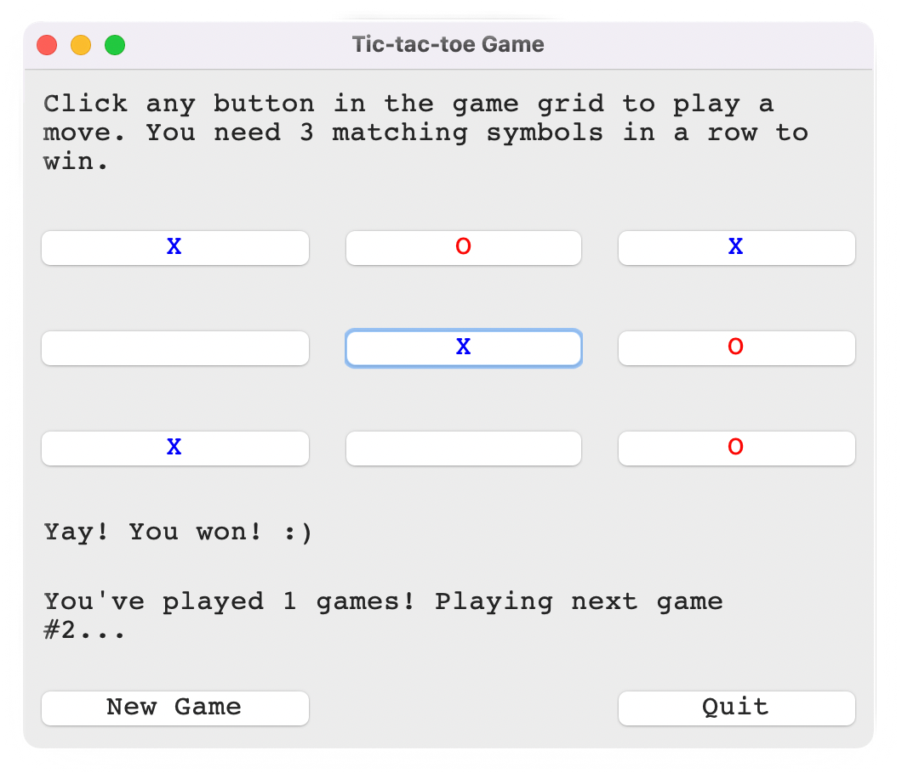

About Me
I'm an MBCS Python programmer with a strong focus on quality assurance, data analysis, and security-minded problem-solving. I enjoy finding hidden issues, fine-tuning secure workflows, and bridging communication gaps. My background spans cryptography, GUI development, NLP, data visualisation, and hands-on troubleshooting across real-world systems, supported by strong administrative and communication skills.
I love clean code, clear documentation, and that satisfying moment when I solve the problem, no matter what time it is. If you'd like to work with me, feel free to get in touch. :)
Project Showcase
Here are some of the projects I've enjoyed building, ranging from technical coursework to personal development. Each one reflects my approach to analysis, clarity, structure, and a detective-mindset.
-
AES-256 Cipher Generator
Python // Cryptography // PBKDF2 // AES-CBC
A PEP8-compliant encryption tool developed as my Open University capstone project. It uses AES-256 in CBC mode with PBKDF2 key derivation, full input validation, and structured error handling.
- Implementation || Implements AES-256 encryption in CBC mode with PBKDF2 key derivation.
- Detective-Mindset || Integrated robust input validation and custom exception handling (EmptyStringError, OneCharBirthMonthError) to prevent system crashes.
- Defensive Design || One million hash iterations to make the derived key computationally expensive to hack!
- Professional Standards || Fully documented and PEP8-compliant, adhering to ISO/IEC 18033-3 and NIST FIP197 standards.
- Security Focus || Demonstrates security-focused programming and defensive coding.
Defensive Programming & Input Validation except WordTooLongError: # catch trolling; words are <45-chars print{f'The longest English word is '+ f'pneumonoultramicroscopicsilicovolcanoconiosis.') -
Supermarket Sales Analysis
Python // Pandas // Matplotlib // Seaborn // Data Cleaning // Visualisation
An end-to-end data analysis project developed as my Edge Hill University capstone project. It explores customer behaviour, sales trends, and product performance. It includes data wrangling, feature extraction, and a wide range of visual charts.
- Data Integrity || Cleaned and normalized a 3-month real-world retail dataset using Pandas.
- Visualisation || Built clear, readable charts using Matplotlib and Seaborn to communicate complex performance data.
- Analytical Insight || Located anomalous gems in the homogenous swill to identify true performance outliers.
- Operational Value || Identified Saturday at 7 pm as the peak transaction window, providing actionable insights for staff redeployment.
- Critical Thinking || Evaluated dataset limitations, noting the downward trend and the risks of short-term data modeling.
Data Cleaning & Feature Engineering day_list = [] # var to hold days for i in range(df.shape[0]): # iterate over all rows # extract day from mm/dd/yyyy day = int(str(df['Date'][i]).split('/')[1]) day_list.append(str(day)) # append to list df['Day'] = day_list # assign new column -
Sentiment Analysis of Game Reviews
Python // NLTK // TextBlob // NER // NLP
A natural language processing (NLP) project analysing sentiment in video game reviews, with additional named entity recognition (NER) to extract key entities.
- Sentence-level sentiment scoring and aggregation.
- Custom classification logic for positive/negative reviews.
- Named Entity Recognition using NLTK.
- Demonstrates text processing, algorithm design, and data interpretation.
Sentiment Classification Logic for sentence in blob.sentences: review_polarity += sentence.sentiment.polarity if review_polarity > 0.27: # avg dataset polarity sentiment_label_for_current_review = 1 # positive else: sentiment_label_for_current_review = 0 # negative -
GUI Games
Python // Tkinter // Event-Driven Programming
Two small but polished GUI games; Tic-Tac-Toe and Rock-Paper-Scissors. They demonstrate state management, event handling, and UI design.
GUI Implementation: Tic-Tac-Toe Game Interface 
Tic-Tac-Toe feature highlights:
- Dynamic 3x3 grid.
- Win-condition algorithm.
- Clean, readable game logic.
Rock-Paper-Scissors feature highlights:
- Event-driven UI.
- Randomised computer choices.
- Score tracking and visual feedback.
UI State Management # player colour in tic-tac-toe style.configure('played.TButton', foreground='blue') # computer colour style.configure('ai.TButton', foreground='red')
Skills
Here's a quick overview of some tools and techniques I've worked with:
- Programming || Python
- Data || Pandas, Matplotlib, Seaborn
- NLP || NLTK // TextBlob
- GUI Development || Tkinter
- Security || AES-256 // PBKDF2 // secure coding practices
- Web || HTML // CSS
- Tools || Git (GitHub)
- QA || Test case design // defect isolation // data validation // UAT
- Soft Skills || Clear documentation // problem-solving // communication
Contact me
Email || caroline.campbell@bcs.org
GitHub || github.com/tehcara
LinkedIn || TBC